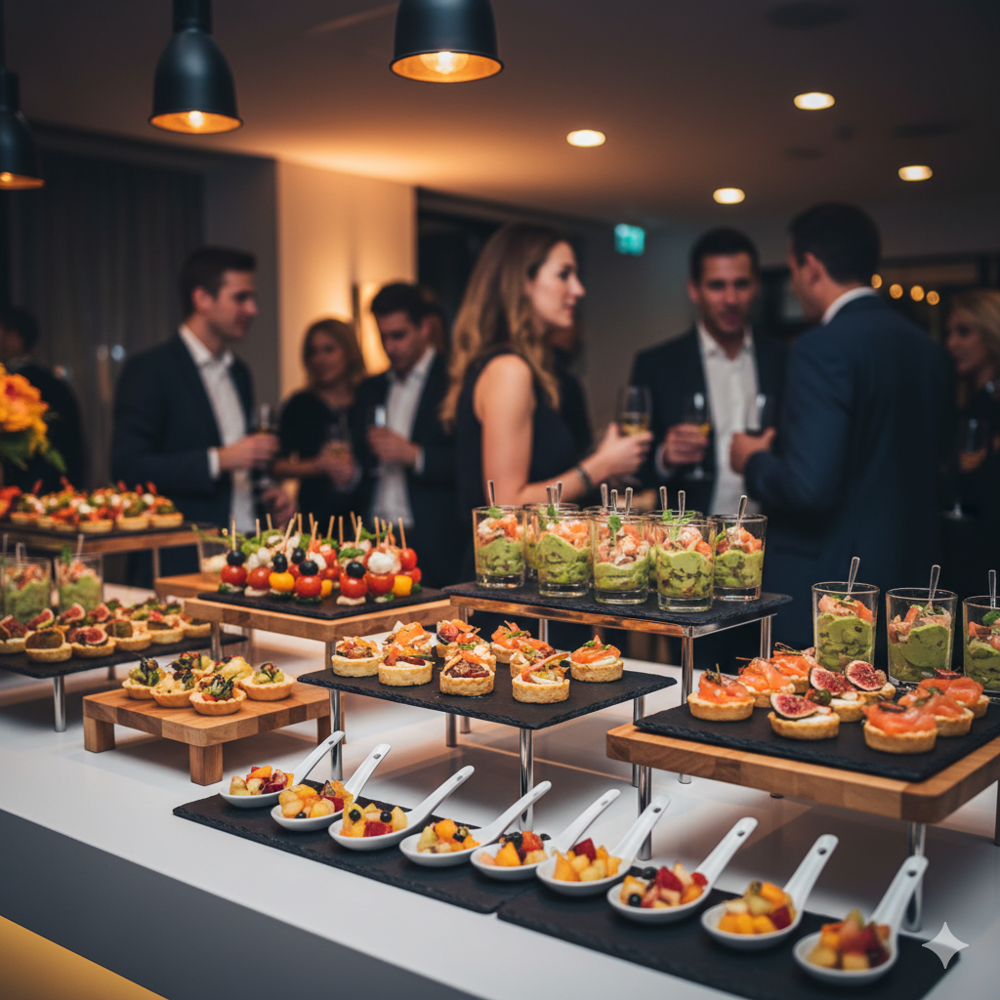

Buffet
Villa Gourmet Eventos
Limeira, SP (Atende Piracicaba)
Sobre o Buffet
O Villa Gourmet Eventos é conhecido pela sua abordagem moderna e criativa na gastronomia para casamentos. Especializamo-nos em ilhas temáticas e finger foods que proporcionam uma experiência dinâmica e interativa para os convidados. Nosso cardápio é uma fusão de sabores, sempre com uma apresentação impecável.
Acreditamos que a comida é uma parte central da celebração. Por isso, nossa equipe de chefs trabalha em estreita colaboração com os noivos para desenvolver um menu que reflita sua personalidade e surpreenda a todos. Atendemos toda a região, levando nossa estrutura e excelência até o seu evento.
Galeria de Fotos
